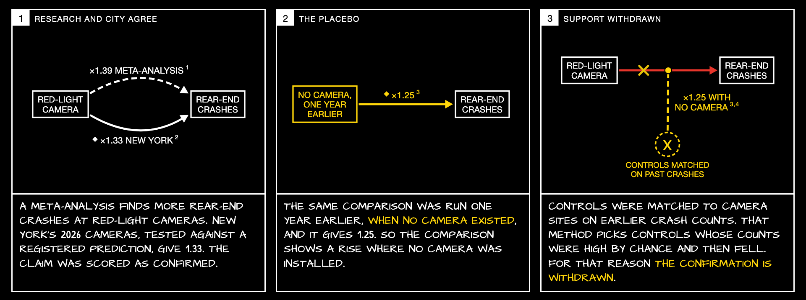

<section id="stripcameras" class="wide alt">
<p class="eyebrow">A strip: support withdrawn</p>
<h2>A placebo, the same test where no camera existed, withdrew a confirmation</h2>

<aside>The registered test gave 1.33 (1.06 to 1.65) for rear-end crashes at the 2026 camera intersections, in line with a meta-analysis (Høye 2013, +39%). The same design moved a year earlier, when no camera existed, gave 1.25 (1.05 to 1.49). Controls had been matched on earlier crash counts, which selects controls whose counts were high by chance. Reading rule 11 makes the verdict unsettled. The same rule undid a confirmation on ambulance times, and unregistered placebos weakened two turn-calming confirmations (0.91 and 0.93 beside estimates of 0.85 and 0.90). Rule 12 now requires a registered placebo. The practical fix is to switch cameras on in a random order among eligible sites.</aside>
</section>
